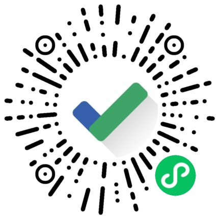

专注时钟
Focus Clock
【专注时钟】是一个帮助你放下手机，专注工作的小程序。
“从每日计划到专注计时，借助专注时钟，你可以轻松将你的一天打理得井井有条，享受高效生活。”
** 该产品页仅用于参加 2022 FinTech 产品竞赛宣传展示 ** —— yuyao,2022/5/7
高效专注，井井有条

专注计时
简约高效开启学霸模式，借助番茄工作法，拯救你的手机依赖症！

每日清单
简约清新的任务管理，借助每日清单轻松规划学习计划、购物清单、备忘提醒，一切井井有条。


白噪声
从大自然中获取灵感，减少焦虑与压力，身心融入平静与专注之中。

成长体系
你的每一次专注成功都是进步，成长等级解锁更多功能玩法……
来自用户的称赞
—— 帮助数千用户管理学习和生活
“简约，美观，而又满足我所有核心需求的工具！”
“从考研复习到在校学习规划，一直在用，已经成为我日常生活的一部分。”
“非常喜欢专注时钟的理念，帮助我捡起了很多碎片化时间。”
开源
是的！这项产品工作的代码现已在 GitHub 开源。
我们希望有开发、设计、产品能力的你提出更多的建议，参与其中。
技术栈
小程序开发
WxAPP
JavaScript
HTML
CSS
SCSS
Web
WXML
WXSS
云开发
WeUI
Figma
ElementUI
UE/UX
关于作者
Hi, I'm Patrick Yu.
一流白日梦想家，二流PM、程序猿、设计狮、烧火棍演奏家。AKA Realyao 😎
导航主页 | GitHub
Email: real.yao@qq.com